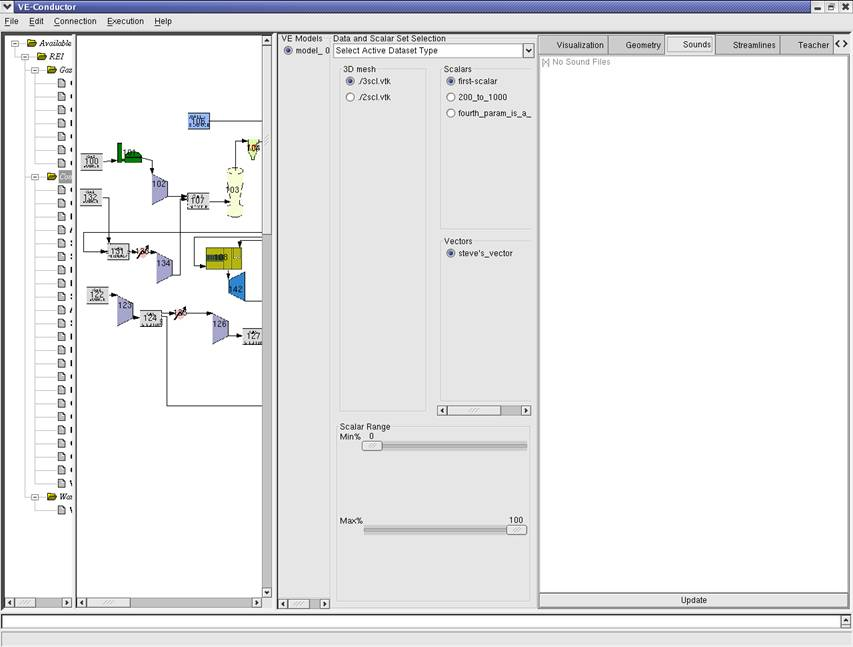
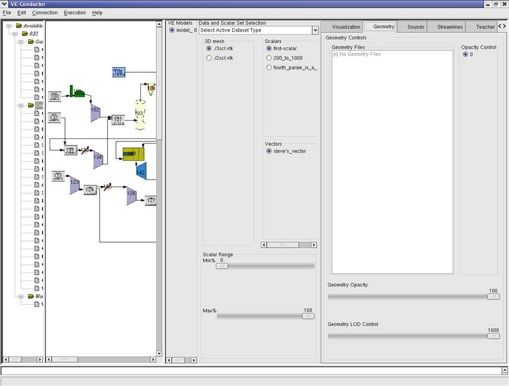
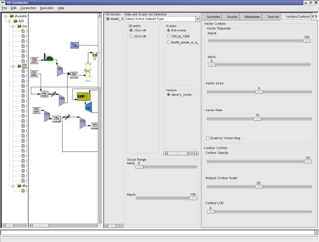
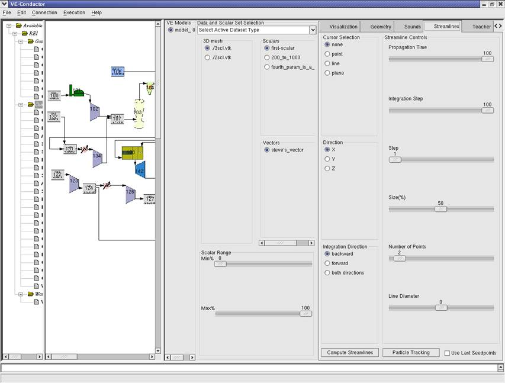
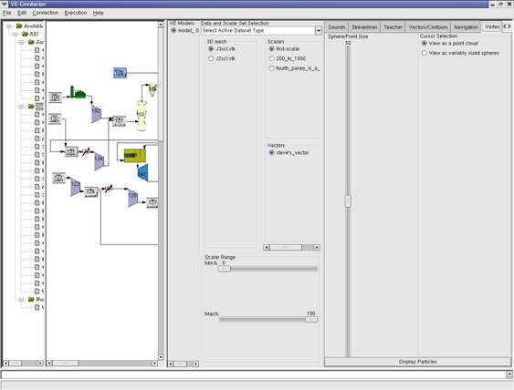

Using the Virtual Engineering Suite |
|

|
To enhance
data readability and usefulness, Vision 21 output can be displayed using the Virtual
Engineering Suite. The VE data viewer uses stored computational output
to generate colored 3-dimensional representations of module results. |
|
|
About the Virtual Engineering SuiteDeveloped by Iowa State University, the VE Suite was designed for operation within a multi-walled 3D environment. Two dimensional images are projected onto the walls, floor, and/or ceiling of a specialized room called a "cave". While inside the cave the user wears stereo 3D glasses that manipulate the wall images to present the user a three dimensional view of the unit. The user is free to navigate around, behind, above, and through the unit in a zero-gravity environment, therefore improving visualization of unit operations. While inside the cave the user interacts with the projected model using a tracked wand and tablet. These tools give the user control over navigation and the method of data display. Though the VE Suite's capabilities are optimized by use within a cave, the viewer can also be used to generate data representations on a desktop. |

The SimWindow Display ScreenThe SimWindow provides a color scheme on the left wall of the cave. This color gradient is used to display varying values of a given datatype. The top number represents a maximum value while the bottom number represents a minimum value. All data above the maximum value will be shaded red. Likewise, all data below the minimum value will be shaded blue. Data falling between these values is shaded according to the color scheme. The distant table (projected on the rear wall) displays user options selectable with the wand. These user options are also accessible within the JavaClient user interface screen using the tablet. Navigation within the SimWindow Display ScreenNavigation in relation to 3D images within the cave is supplemented by the
hand-held wand and tablet. The cave operates within a zero-gravity
environment and navigation is purely translational. The user can simply point
the wand in the desired direction of movement and when the button is
selected, the images change to simulate movement. In addition to navigation
with the wand, the tablet provides options to slide up, down, to
the left, to the right, away
from the unit, or toward the unit. |
Stop animation. |
The Integrated User Interface Screen
Data type & Scalars informationThe VE viewer can be used to trace a variety of data including gas direction, velocity, pressure, temperature, density, and specie concentration. The user controls the method of data display using the Integrated VE-Frame user interface on the tablet. The left panel governs which data type is displayed. From the data field on the left panel the user can select one data type for display. It also controls the method by which data is shaded in the cave. The sliding bars of Scalar Ranger regulate the data maximum and minimum based on percentages of the absolute maximum and minimum. For example, in the color scheme illustrated in the above SimWindow snap, the default maximum is 3200 and the minimum is 400. This means that the highest computed gas temperature for the module was 3200 K and the lowest computed temperature was 400 K. By moving the minimum sliding bar up towards 50, the data range narrows and provides a more detailed representation of temperature values in the upper half of the absolute temperature range. |
|
 |
Geometry FolderThe Geometry folder allows the user to toggle the display of unit
geometry. When selected, the viewer displays a simplified representation of the
unit itself (gasifier shown at left) inside the SimWindow screen. Unit geometry will not obstruct
data--it becomes nearly transparent when data is displayed. |

|
Visualization FolderCategoryThe VE Suite offers several methods of data display. The user may choose one of the following categories: DirectionFor those categories that display data along a unit cross-section (i.e. contour, warped contour, transient, vector, PIV_Image), the direction field regulates the method by which the two-dimensional plane is generated. The Cartesian axes listed represent normals to the planes displayed. For example, when the Y axis is selected, the planes will run perpendicular to the Y axis (parallel to the monitor's screen). The user may also generate cross-sectional planes that are not orthogonal to the defined axes using the wand (By wand option). When selected, the viewer generates a plane normal to the direction of the pointed wand. Sliding BarThe values beneath the sliding bar represent percentages. This bar is used to control data display by regulating the position of cross-sectional planes or the value by which isosurfaces are generated. |
ContourThe Contour category generates a cross-sectional plane running through the unit. Data is then projected onto this plane using the color-shading scheme to represent varying values. The sliding bar regulates the position of the cross-sectional plane. For example, planes run from left (value=0) to right (value=100) along the X-axis. The value of 50 (displayed at right) creates a plane centered in the middle of the unit. Similarly, planes run from base to top along the Z-axis, and from front to back along the Y-axis. |
|
 |

Warped ContourThe Warped Contour category works similarly to the Contour category. In contrast, however, the Warped Contour warps the contour according to the local velocity vector. Instead of simply shading data along the 2D cross-section, data is extruded to its respective value on the contour. |

Vector
The Vector operate similarly to the Contour when calculations include the appropriate datatypes. Data is projected onto a 2D cross-sectional plane and shaded according to the illustrated color scheme when any of these categories are selected.
Streamline
The streamlines category creates 3D images of streamlines with user-specified seed points. When selected, the user utilizes the wand to specify the position of seed points from which the viewer generates streamlines.


Polydata/VetexThe Polydat/Vetexa category displays individual particle paths through the unit. The particle positions are predefined. |
|
 |